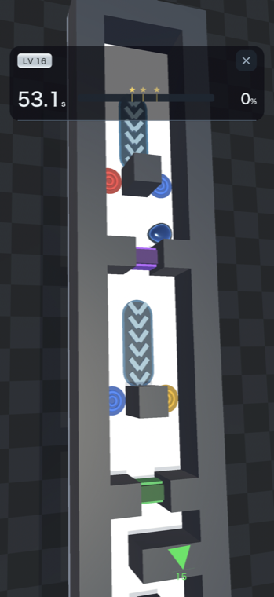
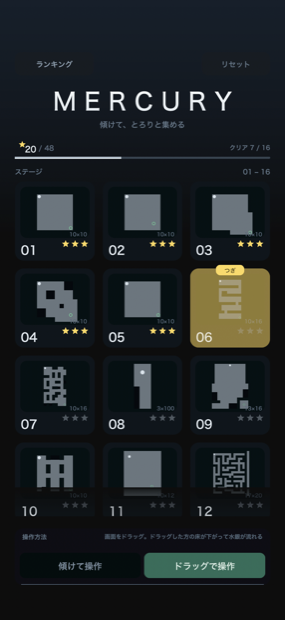
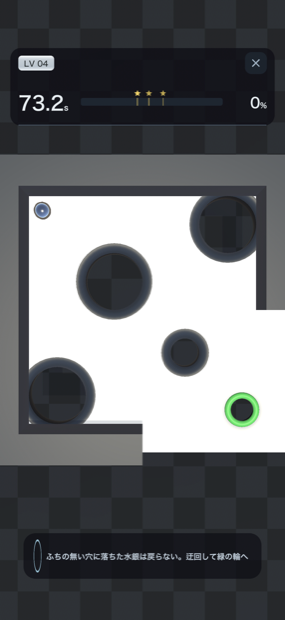
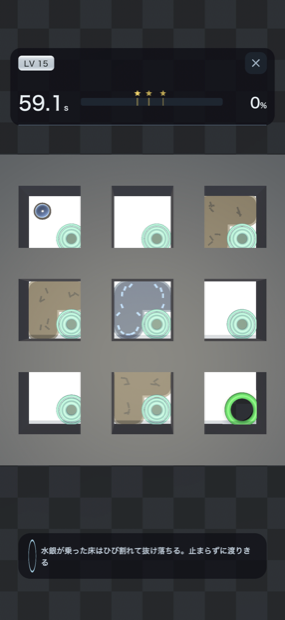
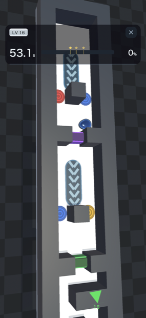

iPhone / iPad · パズルPuzzle
銀色の水たまりを、
こぼさずに運ぶ。A pool of liquid silver.
Don't spill it.
盤ごと傾けて、液体の水銀をゴールの穴へ導くパズル。Tilt the whole board to guide liquid mercury into the goal.
水銀はひと粒ずつが本物の流体としてふるまいます。急げば散らばり、ためらえば時間が足りない。「どれだけ通せたか」がそのまま成績になります。Every drop is simulated fluid. Rush and it scatters, hesitate and the clock runs out. Your score is simply how much of it you got through.

操作Controls
指は3つの使い方しかしません。Three things your fingers do.
ボタンもメニューも要りません。盤を傾け、先を覗き、寄りと引きを変える。それだけです。No buttons, no menus. Tilt the board, look ahead, change how close you are. That is all.
1本指でドラッグDrag with one finger
盤が傾き、水銀が流れます。傾けた向きと角度がそのまま重力になります。The board tilts and the mercury runs. The direction and angle you drag become gravity.
タップTap
その場所を1.5秒だけ覗きます。壁の向こうや、これから通る道を先に確かめられます。Peek at that spot for 1.5 seconds — check what is beyond a wall before you commit.
2本指でつまむPinch
縮尺が変わります。細い通路は寄って、長い面は引いて。Zoom in and out. Close for narrow corridors, back for the long stages.
成績Scoring
通した量が、そのまま点になる。What you deliver is the score.
クリアは「ゴールへ通した水銀の割合」で決まります。基準を超えたあとの数秒でさらに送り込めれば★が増えます。床の穴へ落とした水銀は戻りません。You clear a stage by getting enough mercury through the goal. Keep pouring in the seconds after you pass the mark and you earn more stars. Mercury lost down a hole is gone for good.
例：基準が45%の面なら、63%まで通せば★★★。こぼしすぎて基準に届かなくなった時点で、そこで終わりです。Example: on a stage with a 45% bar, 63% earns three stars. Spill enough that the bar is out of reach and the run ends there.
16ステージ16 stages
盤の上のものは、だいたい水銀の邪魔をします。Most things on the board are in your way.
ステージが進むごとに仕掛けがひとつずつ増えます。同じ解き方は二度使えません。Each stage adds one more mechanism. The same solution never works twice.
床Floors
- 摩擦のない氷 ― 止まれませんFrictionless ice — you cannot stop
- 乗っていると崩れる床Floors that crumble under weight
- 開いたり閉じたりする床Floors that open and close
- ベルトコンベア・加速床・粘着床Conveyors, boost pads, sticky floors
風Wind
- 横へ吹き流す扇風機Fans that push you sideways
- 巻き込む渦Whirlpools that pull you in
- 壁を越えさせる吹き上げUpdrafts that lift mercury over walls
移動Passage
- 一方通行のワープ ― 踏むと戻される罠One-way warps — a trap that sends you back
- 双方向のトンネルTwo-way tunnels
- 鍵床と、開いたら閉じない扉Key pads and doors that never shut again
- 回る壁と床、バンパーRotating walls and floors, bumpers
色Color
赤・青・黄の染料で水銀を染め、混ぜて紫や緑をつくります。関門は色がぴたりと合った水銀だけを通します。着色ライトは色を足すのではなく、塗り替えます。Dye your mercury red, blue or yellow, then mix to make purple or green. A gate passes only mercury whose color matches exactly — and colored lights repaint the mercury rather than adding to it.




Game Center · サポートSupport
★の合計で競えます。Ranked on total stars.
集めた★の合計が Game Center のランキングに登録されます。サインインしなくてもゲームは通常どおり遊べます。ネットワーク接続は要りません。Your total stars go to the Game Center leaderboard. The game plays normally without signing in, and needs no network connection.
不具合の報告・ご意見・お問い合わせはこちらへ。日本語と英語どちらでも構いません。Bug reports, feedback and questions are welcome, in English or Japanese.
akky0926@gmail.com